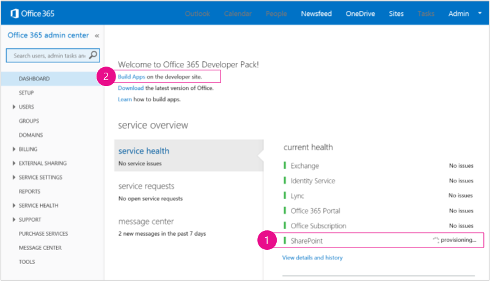
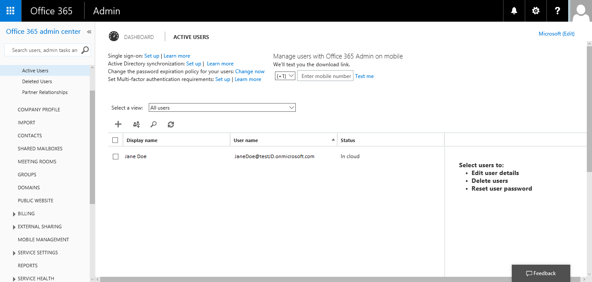

Curriculum Page
Registration
Topics
- Sign up at Office Dev Center
- Join Office 365 Developer Program
- Access your Office 365
- 4. Assign Office 365 license
- MSDN Resources
Sign up at Office Dev Center
在Sign up with Office Dev Center to get a free Office 365 developer account.
Figure 1. Office 365 Dev Program

Join Office 365 Developer Program
- You will receive an email from the O365 Developer Program. Scroll down the email, click on the provided link to sign up for a free O365 developer account.
- The first page (not shown) of the signup form is self-explanatory. Just supply the information about yourself that is requested and choose Next.
- On the second page, shown in Figure 2, specify a user ID for the administrator of the subscription.
Figure 2. Office 365 Developer Site domain name

4. 4. Create a subdomain of .onmicrosoft.com
After signup, you have to use the resulting credentials (in the format UserID@yourdomain.onmicrosoft.com) to sign in to your Office 365 portal site where you administer your account. Your SharePoint Online Developer Site is provisioned at your new domain: http://yourdomain.sharepoint.com.
5. Choose Next and fill out the final page of the form. If you choose to provide a telephone number to obtain a confirmation code, you can provide a mobile or land line telephone number, but not a VoIP (Voice over Internet Protocol) number.
| Note |
If you’re logged on to another Microsoft account when you try to sign up for a developer account, you might get this message: "Sorry, that user ID you entered didn’t work. It looks like it’s not valid. Be sure you enter the user ID that your organization assigned to you. Your user ID usually looks like someone@example.com or someone@example.onmicrosoft.com." If you see this message, log out of the Microsoft account you were using and try again. If you still get the message, clear your browser cache or switch to InPrivate Browsing and then fill out the form. |
Once your account is created, you will receive another email that contains a link to access your Office 365.
Access your Office 365
Your browser will open the Office 365 installation page. Choose the Admin icon to open the admin center page.
Figure 3. Office 365 admin center page
- You’ll have to wait for your Developer Site to finish provisioning. After provisioning is complete, refresh the admin center page in your browser.
- Then, choose the Build Add-ins link to open your Developer Site. You should see a site that looks like the one in Figure 4. There is an Add-ins in Testing list on the page. This confirms that the website was made with SharePoint's Developer Site template. If you see a regular team site instead, wait a few minutes and launch your site again.
- If you do not have the development tool, you will be directed to Add the "Napa" Office 365 Development Tools. You can use Napa to develop your add-ins on this site.
- Make a note of the URL of the site. It is used when you create SharePoint Add-ins projects in Visual Studio.
Figure 4. Your Developer Site home page with the Add-ins in Testing list

Assign Office 365 license
To assign Office 365 license for yourself, the active user. Click on the “waffle” icon > Admin icon located on the top left.
Figure 5. Office 365 landing page

In the left navigation panel, select Users > Active Users
Select yourself by clicking on the checkbox. Your profile will be shown on the right. Click Edit under the item: Assigned license
Figure 6. Office 365 admin center > Active Users
3. Select your location in the Set user location combo box. And select Microsoft Office 365 Developer. Click Save to finish assigning the license.
Figure 7: Assign license for the active user profile

4. After you’re finished, return to the Office 365 homepage. The page will display the products that are available to you, including the Office web apps. Pull down the page to see the full display.
Figure 8. Office 365

To navigate back to the developer site, click on the “waffle” icon (located in the top-left corner) > Admin > Build Apps
MSDN Resources